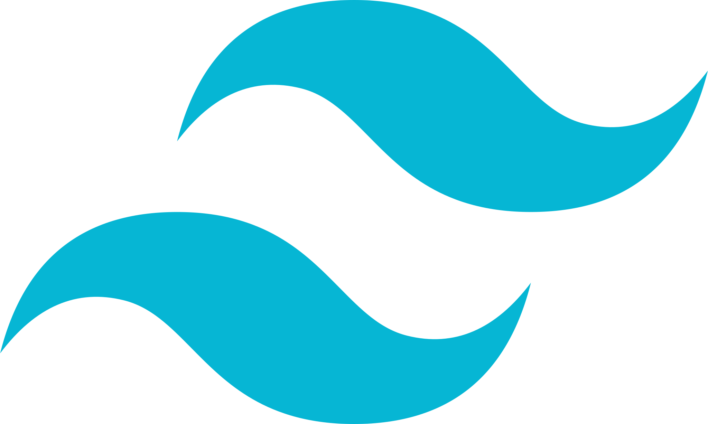
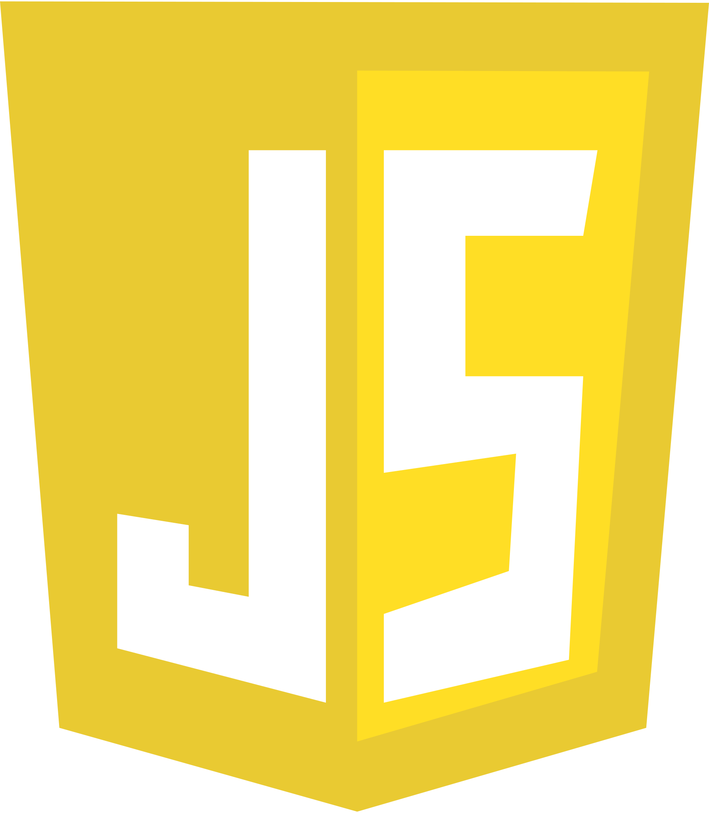
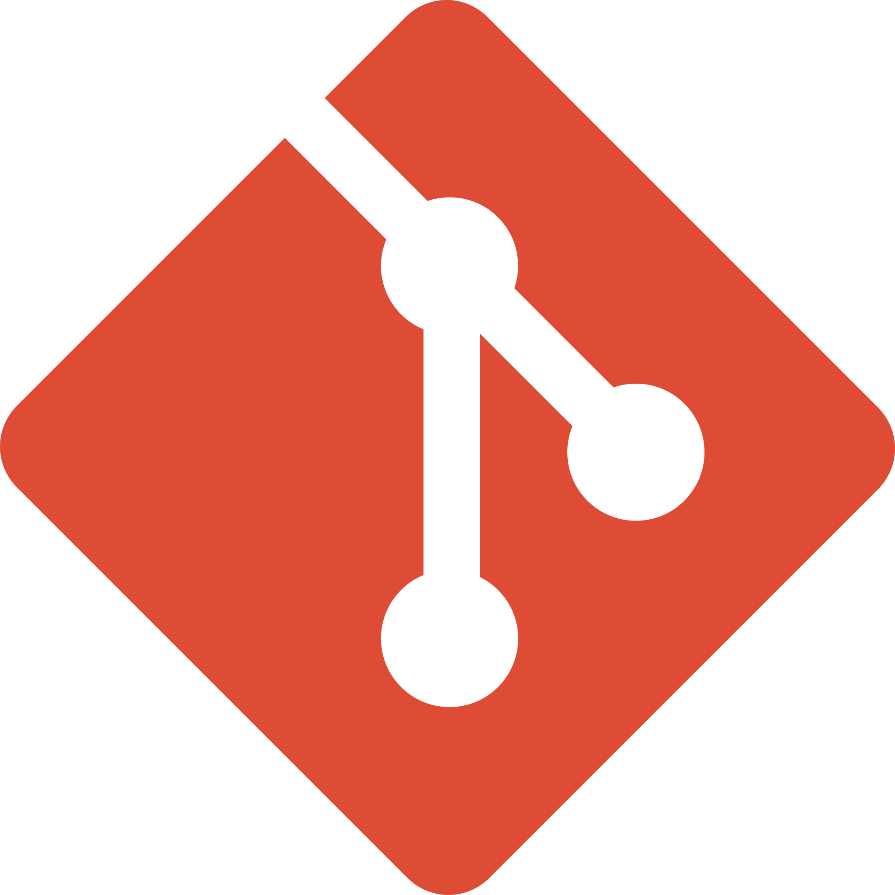
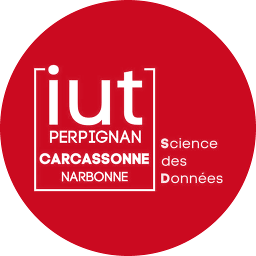
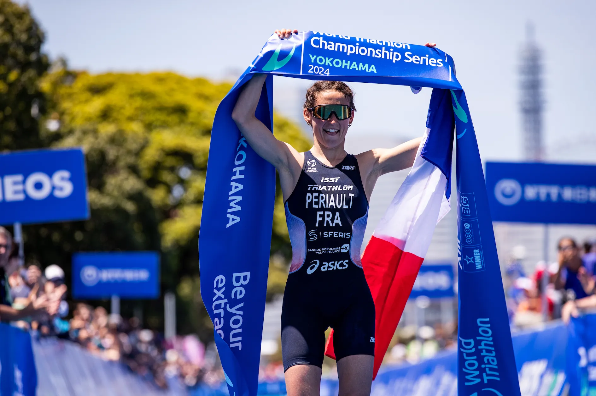
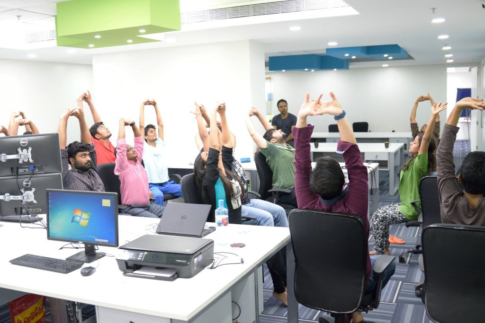
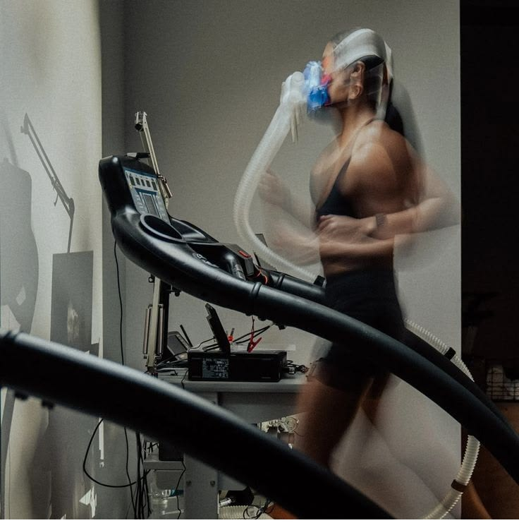

Interface
Front-end
Interfaces web réactives et responsives.
HTMLCSSTailwindJavaScript
Développeur full stack en formation, je conçois des applications web du front-end au back-end, connectées à des bases de données relationnelles et NoSQL, avec une solide culture de la donnée (pipelines, modélisation, entrepôt).
En recherche d'alternance
pour intégrer une école d'informatique : développeur full stack, BI ou data engineering.
Technologies utilisées en développement web & data
 HTML
HTML
 CSS
CSS

Tailwind
JavaScript PHP
PHP
 Python
Python
 Django
R
Django
R
 SQL Server
SQL Server
 PostgreSQL
MongoDB
Neo4j
Airflow
PostgreSQL
MongoDB
Neo4j
Airflow

GitSavoir-faire
Interface
Interfaces web réactives et responsives.
Serveur
Logique serveur, authentification et gestion des rôles.
Data
Modélisation relationnelle et NoSQL.
Analyse
Traitement, analyse et visualisation de données.
Pipeline
Pipelines et entrepôt de données en architecture médaillon.
Workflow
Méthodes agiles, modélisation et versionnement.
0
Projets
0
Technologies
0
Domaines techniques
Aperçu

Suivi des performances
FFTri · Django

Cartographie des randonnées
Full stack · SVG

Accidents à vélo
Data · SIG

Stationnement de Carcassonne
Full stack · SIG
Migration PostgreSQL / MongoDB
Python · ETL
Suivi des performances
FFTri · Django
Cartographie des randonnées
Full stack · SVG
Accidents à vélo
Data · SIG
Stationnement de Carcassonne
Full stack · SIG
Migration PostgreSQL / MongoDB
Python · ETL
Suivi des performances
FFTri · Django
Cartographie des randonnées
Full stack · SVG
Accidents à vélo
Data · SIG
Stationnement de Carcassonne
Full stack · SIG
Migration PostgreSQL / MongoDB
Python · ETL
Parcours
Un parcours qui m'a conduit de l'analyse de la performance au développement full stack, avec la donnée comme fil rouge.
Entraînement sportif. Évaluation et analyse de la performance, application des sciences de l'exercice et méthodologie de recherche appliquée au sport.
Réathlétisation, récupération & prévention de la blessure. Évaluation de la performance sportive, analyse de données physiologiques et méthodologie scientifique.
Data Analysis & Tools Applied to Sports. Collecte, nettoyage et exploitation de données sportives avec R et Tableau pour produire des visualisations et indicateurs de performance.

Visualisation & Conception d'Outils Décisionnels : développement d'applications web (HTML, CSS, JS, PHP), bases de données relationnelles et NoSQL (SQL, MongoDB, Neo4j), et conception d'outils d'aide à la décision à partir de la donnée.
“Ce que l'on apprend ne prend tout son sens qu'à l'épreuve du réel.”

Full Stack & Data Engineer · Alternant
Application Django (MVT, ORM, authentification et gestion des rôles) pour l'analyse des résultats internationaux. Pipeline Extract-Transform-Load depuis l'API World Triathlon et entrepôt en architecture médaillon (SQL Server), versionné Git / GitLab.

Auto-entrepreneur · Prévention santé
Chargé de prévention santé et bien-être au travail. Conception et animation de séances visant la prévention des TMS, adaptées aux profils des collaborateurs.

Sport Scientist · Stage
Analyse non-linéaire de la variabilité de la fréquence cardiaque et de la VO₂ max. Traitement et interprétation de données physiologiques, rédaction d'un mémoire sous forme d'article scientifique.
Préparateur physique
Élaboration de programmes d'entraînement individualisés, suivi quantitatif des performances et protocoles de prévention des blessures pour des boxeurs.